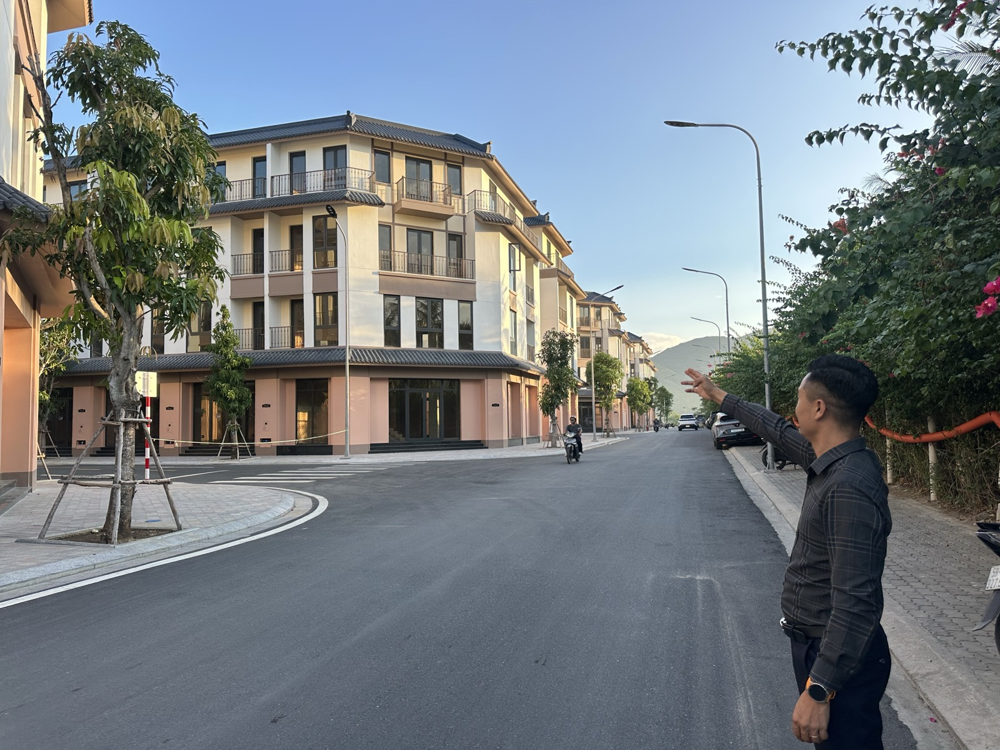
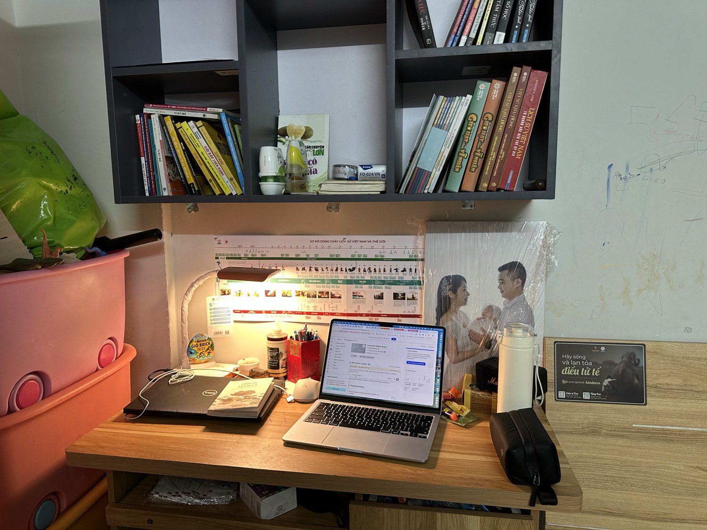
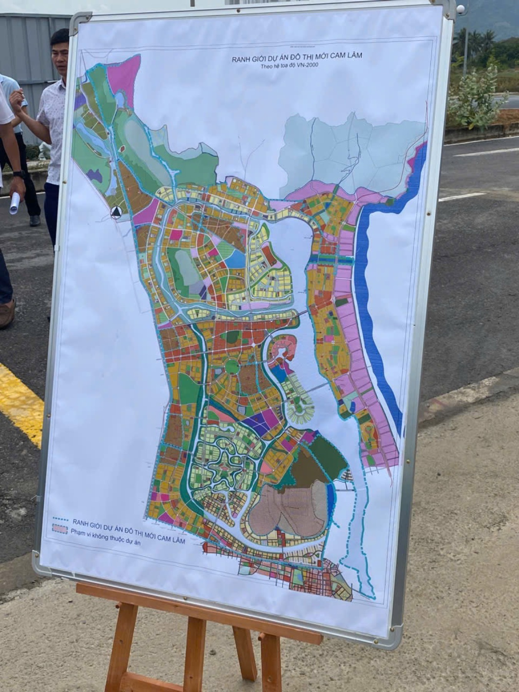

Đánh thuế đất bỏ hoang như thế nào? Người giữ đất nên chuẩn bị gì
Chiều 20/11, Quốc hội đã thông qua mức thuế 0,2%/năm với đất bỏ hoang. Từ hôm đó tôi nhận được khá nhiều câu hỏi cùng một ý: đánh thuế đất bỏ hoang như thế nào, lô đất trống của tôi có bị tính không? Câu trả lời thật là: mức thuế đã có, nhưng định nghĩa "bỏ hoang" thì chưa. Bài này tách rõ phần đã chốt, phần còn chờ, và những việc người đang giữ đất làm được ngay từ bây giờ.

Trong một khu đã lên nhà, lô đất trống thường là lô dễ bị hỏi đến đầu tiên.
Phần đã chốt: 0,2%/năm, không hạn mức, áp dụng từ 1/7/2027
Quốc hội thông qua luật sửa đổi, bổ sung một số điều của Luật Thuế thu nhập doanh nghiệp, Luật Thuế sử dụng đất phi nông nghiệp và Luật Thuế thu nhập cá nhân, với 475/477 đại biểu tán thành (theo CafeF, 20/11/2026). Những điểm liên quan tới đất bỏ hoang, theo hai bài báo tôi đối chiếu:
| Nội dung | Theo tin đã thông qua |
|---|---|
| Đất bỏ hoang | 0,2%, không áp hạn mức |
| Đất sử dụng không đúng mục đích | 0,15% |
| Đất dự án đầu tư phân kỳ (được duyệt) | 0,03% |
| Diện tích tính thuế | Diện tích thực tế sử dụng hoặc bỏ hoang |
| Hiệu lực | Luật: 1/1/2027 · riêng mức thuế đất bỏ hoang: 1/7/2027 |
Hai dòng giữa bảng lấy từ Thời báo Tài chính Việt Nam, 20/11/2026. Dòng "diện tích thực tế" là điểm tôi thấy đáng chú ý: trong lúc còn dự thảo, nhiều người lo một thửa đất chỉ bỏ trống một phần cũng bị tính trên toàn thửa. Theo tin đã thông qua, thuế tính trên phần diện tích thực tế. Để so sánh, mức thuế đất ở phổ biến hiện nay trong hạn mức là 0,03% — tức 0,2% cao gần 7 lần.
Đây là tin báo chí tường thuật phiên biểu quyết. Tôi chưa đọc văn bản luật cuối cùng, nên mọi chi tiết ở trên cần đối chiếu lại khi luật được đăng.

Đánh thuế đất bỏ hoang là đất gì? Chỗ này luật thuế chưa trả lời
Luật thuế chỉ nói đất bỏ hoang được xác định theo pháp luật về đất đai. Chính phủ cam kết công khai tiêu chí, thời gian và cơ quan xác định đất bỏ hoang trước ngày 1/7/2027, đồng thời loại trừ trường hợp bất khả kháng hoặc trở ngại khách quan (theo CafeF, 20/11/2026). Nghĩa là hôm nay chưa ai trả lời chắc được câu "lô của tôi có bị tính không" — kể cả tôi.
Ba câu hỏi tôi đang chờ văn bản hướng dẫn trả lời:
- Khai thác tạm — cho thuê làm bãi xe, kho, trồng cây — có được tính là "đã đưa vào sử dụng" không?
- Đất chậm xây vì quy hoạch chưa rõ, chưa được cấp phép, hoặc vướng thủ tục ở phía cơ quan nhà nước có được loại trừ không?
- Thời điểm bắt đầu tính "bỏ hoang" là ngày nào: ngày nhận đất, ngày hết hạn đưa vào sử dụng, hay ngày bị xác định?
Câu thứ ba được chính một đại biểu Quốc hội nêu khi dự luật còn thảo luận ở tổ (ghi lại trong nhật ký thị trường tôi theo dõi, nguồn CafeF 23/10/2026). Tới giờ tôi chưa thấy câu trả lời trên báo.
Cách tính thuế đất bỏ hoang: phép tính giả định, chưa phải con số thật
Thuế sử dụng đất phi nông nghiệp hiện nay tính theo công thức: diện tích tính thuế × giá 1m² đất tính thuế × thuế suất, trong đó giá đất tính thuế lấy theo bảng giá đất do UBND tỉnh ban hành — thường thấp hơn giá giao dịch thị trường. Cách xác định giá tính thuế theo luật mới tôi chưa thấy văn bản hướng dẫn, nên phép tính dưới đây chỉ để hình dung độ lớn:
| Giả định | Mức 0,03% | Mức 0,2% |
|---|---|---|
| Lô 100m², giá bảng giá giả định 20 triệu/m² (= 2 tỷ theo giá nhà nước) | 600.000 đ/năm | 4.000.000 đ/năm |
Hai điều rút ra. Thứ nhất, với một lô đất nhỏ của cá nhân, tiền thuế không phải khoản làm người ta "phải xả đất" — chi phí lãi vay và chi phí cơ hội của vốn lớn hơn nhiều, tôi đã tính ở bài 12/10 khi luật còn là dự thảo. (Bài đó tôi tính trên mỗi 1 tỷ giá trị cho dễ nhân; thực tế căn cứ tính là giá theo bảng giá nhà nước.) Thứ hai, điều đáng để tâm hơn tiền thuế là cái nhãn "đất bỏ hoang": Chính phủ nói rõ thuế chỉ là một trong nhiều công cụ, bên cạnh xử phạt và thu hồi đất (theo CafeF, 20/11/2026). Bị xếp vào diện bỏ hoang là chuyện của hồ sơ pháp lý, không chỉ của vài triệu đồng mỗi năm.

Có đánh thuế đất bỏ hoang không, nếu đất chậm xây vì quy hoạch?
Theo cam kết của Chính phủ, trường hợp có trở ngại khách quan sẽ được loại trừ. Vấn đề là "khách quan" phải chứng minh được. Từ kinh nghiệm đi kiểm tra quy hoạch cho khách, tôi chia đất trống ra hai nhóm khác hẳn nhau:
- Chưa xây được: đất nằm trong vùng quy hoạch chưa rõ, đang chờ điều chỉnh quy hoạch, chưa đủ điều kiện cấp phép, hoặc hồ sơ đang nằm ở cơ quan nhà nước. Đây là nhóm có khả năng thuộc diện loại trừ — nếu có giấy tờ chứng minh.
- Không muốn xây: đất đủ điều kiện, nhưng để trống chờ giá. Đây là nhóm chính sách nhắm tới.
Hai lô nằm cạnh nhau, nhìn ngoài giống hệt nhau, có thể rơi vào hai nhóm khác nhau. Thứ phân biệt chúng là hồ sơ, không phải lời kể. Tôi đã viết cách đọc quy hoạch và hỏi "quyết định số mấy, ngày nào" ở bài 18/11.
Người đang giữ đất nên làm gì trước 1/7/2027
Không cần vội vàng bán. Nhưng có bốn việc tốn ít công mà nên làm ngay:
- Giữ bằng chứng đang sử dụng: nếu lô đất đang cho thuê, trồng cây, làm bãi xe thì giữ hợp đồng thuê, biên nhận, hoá đơn, và chụp ảnh hiện trạng có ngày tháng theo từng quý.
- Giữ bằng chứng "chưa xây được": văn bản trả lời quy hoạch, hồ sơ xin phép xây dựng đã nộp, giấy hẹn, công văn — mọi giấy tờ cho thấy chậm trễ không đến từ phía mình.
- Tự xếp lô đất vào một trong hai nhóm ở trên, thật lòng với chính mình. Nếu là nhóm "không muốn xây", hãy đưa khoản thuế giả định vào bảng tính giữ đất hằng năm.
- Đặt lịch đọc văn bản hướng dẫn: ngày tiêu chí "đất bỏ hoang" được công bố mới là ngày quyết định. Tôi sẽ đọc và cập nhật lại bài này khi có.
Điều tôi không khuyên: nghe tin "đánh thuế đất bỏ hoang" rồi bán tháo, hoặc dựng tạm một công trình cho có để "lách". Khi tiêu chí còn chưa có, mọi cách lách đều là đoán — và đoán sai thì tốn tiền hai lần.
Điều tôi để ý nhất
Luật lần này không nói nhiều về tiền thuế, mà nói về chiều hướng: đất được giao là để đưa vào sử dụng. Người giữ đất có kế hoạch rõ ràng và có giấy tờ đầy đủ gần như không phải lo. Người giữ đất "cho chắc" mà không nhớ nổi giấy tờ để đâu thì nên bắt đầu sắp xếp lại từ tuần này. Tin tổng hợp tuần qua về ba luật nhà đất, tôi đã ghi ở bài điểm tin 22/11.
Nguồn tham khảo
- Quốc hội chốt áp thuế 0,2% với đất bỏ hoang — CafeF, 20/11/2026
- Từ 1/7/2027: Đất bỏ hoang chịu thuế suất 0,2%, không áp dụng hạn mức — Thời báo Tài chính Việt Nam, 20/11/2026
Bài viết dựa trên tin báo chí tường thuật phiên Quốc hội ngày 20/11/2026 và nhật ký thị trường tôi theo dõi từ tháng 10/2026; tôi chưa đọc văn bản luật cuối cùng. Tiêu chí xác định đất bỏ hoang và cách tính chi tiết chưa được ban hành. Phép tính trong bài là giả định minh hoạ, không áp dụng cho một lô đất cụ thể nào. Bài không nhằm khuyến nghị mua, bán hay giữ đất; trước khi quyết định, anh/chị nên kiểm chứng tại văn bản chính thức hoặc hỏi cơ quan thuế nơi có đất.
"Rồi, ngày mới tốt lành nhé."
Sống tử tế · Kiếm tiền hạnh phúc · Cho đi giá trị
Đang giữ một lô đất trống và chưa biết xếp vào nhóm nào?
Gửi tôi vị trí và giấy tờ hiện có của lô đất. Tôi giúp anh/chị đối chiếu quy hoạch và liệt kê những giấy tờ nên giữ trước mốc 1/7/2027. Miễn phí.
Nhắn Zalo — 0869 668 638